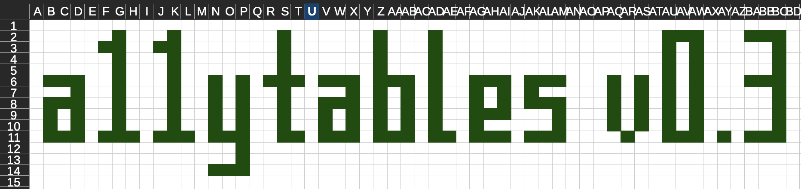

cover_list <- list(
"Information" = "This is a demo spreadsheet cover.",
"Contact us" = c(
"Find out more by contacting us.",
"Website: https://co-analysis.github.io/a11ytables/",
"Email address: fake.address@a11ytables.com"
)
)
tl;dr
An update about updates to {a11ytables}. Also maybe I should rewrite the whole thing from scratch, lol.
Birth
Right so, I made the {a11ytables} R package to help create government statistics publications that meet official best practice standards. You may be interested in a talk I did about it at EARL 2022.
I originally made it for me and my team so we could publish accessible spreadsheets to GOV.UK. It seems to have been picked up by a number of other government departments, so I’ve continued to develop it even though I don’t use it myself anymore1.
You can stop reading now if you aren’t one of those 12 users. Go and water your plants maybe.
Life
I’ve done two minor updates that add new features. We’re now on version 0.3, please try to keep up.
Of course, you can read the package’s NEWS.md file for details on the changes covered by these updates.
My tests are weak and I’ve no idea of all edge cases, so please do leave an issue in the repo if you find something bad or embarrassing2 in the package.
Version 0.2
The package interface lets you supply a data.frame to insert into each worksheet. Nice and simple and makes perfect sense for the contents, notes and ‘tables’ sheet types. But not ideal for the cover, actually.
You used to have to supply a data.frame for the cover that had a row per section and a column each for the section headers and their content. This is obviously restrictive: what if the sections on your cover sheet need more than one row of information?
For example, you might need a section on the cover sheet called ‘Contact us’ that contains three rows: some preamble, a website link and a contact email address.
Version 0.2 of the package, which dropped in November 2023, solves this problem. Now you can provide a list object with arbitrary content instead of providing a data.frame. For example:
This will result in a cover sheet with two sections. The first will have one row and the second will have three. This is way better than in before, when you could only supply one row per section.
But wait! This update made hyperlinks available on the cover page as well. The user supplies these in Markdown format—like [{a11ytables}](https://github.com/co-analysis/a11ytables)—and they’re auto-converted so that the resulting spreadsheet cell contains a hyperlink3. For example, the website and email address could be written like this:
cover_list <- list(
"Information" = "This is a demo spreadsheet cover.",
"Contact us" = c(
"Find out more by contacting us.",
"[Website](https://co-analysis.github.io/a11ytables/)",
"[Email address](fake.address@a11ytables.com)"
)
)While I was adding the hyperlink functionality to the cover, I figured I would make it available to the source argument of create_a11ytable() as well, so users can link to the origin for the tables of data in their publication.
sources = c(
rep(NA_character_, 3),
"[Gorman et al, 2024](https://journals.plos.org/plosone/article?id=10.1371/journal.pone.0090081)"
),Version 0.3
Arbitrary content was also the theme for version 0.3, which hit shelves earlier this month. Prior to this version, it was assumed there were only going to be certain rows of information above a table: the sheet title (required, provided by the user), a message about the number of tables in the sheet (autogenerated), a message about the presence of notes (autogenerated) and the data source (optional, if provided by the user).
But {a11ytables} users and other spreadsheet publishers made it clear that sometimes they want to put other, arbitrary rows above tables of data. I can’t think of a good reason why extra rows of text above tables of data would necessarily break best practice guidance. In fact, they’ll probably be helpful to provide needed context.
So, version 0.3 allows for these arbitrary rows of content. Not just on sheets containing data tables, but also on the contents and notes sheets, just in case. Of course, these can also be provided in the form of Markdown hyperlinks if the user desires.
The approach to integrating this functionality is a new argument to create_a11ytables(): custom_rows. You provide a character vector where each element is a sheet and each sub-element is a separate custom row for that sheet. Here’s an example of specifying the list argument where the fourth sheet will contain two custom rows, the first of which is a hyperlink:
custom_rows = list(
rep(NA_character_, 3)
c(
"First custom row [with a hyperlink.](https://co-analysis.github.io/a11ytables/)",
"Second custom row."
)
),Death?
These are two fixes that were a long time coming. Time now to ramble and navel-gaze4 about the future of the package. You can always take a look at the outstanding issues to see what’s on the to-do list. For now there’s a couple of things I want to mention.
I like those ODS
A big missing piece of the puzzle is to have the option to write to an open-format ODS file, which is the preferred format for publishing on GOV.UK. I’ve had some great chats with the underground cross-government ‘Spreadsheet Club’5 to consider whether it’s possible to do things like piggyback off a spreadsheet program via the command line6 or even develop some code to generate the necessary XML files. Ideally I need an {openods} package, or to add functionality into {openxlsx}7 to convert the Workbook-class object into the necessary XML for an xlsx file or an ODS file. None of these are ‘easy’.
Another thing: there are plenty of bugfixes and outstanding nice-to-haves as well. Much of the development required is to handle cell-level problems, like setting the number of decimal places to show. This is not that hard in principle; {openxlsx} itself has some options() that you can set. The hard part is that numeric columns are often coerced to text columns in {a11ytables} because strings are often used as placeholder values, like ‘[c]’ for confidential values.
There’s another reason why this kind of thing is tricky: the ethos of {a11ytables} is to keep the user interface ‘simple’ so an analyst can go from data to spreadsheet as quickly as possible. Adding lots of arguments to control things like decimal places would clutter the interface and could be a headache for backwards-compatibility if more need to be added in future. This makes me think that an options()-led approach would be a decent solution, especially as this is already something that {openxlsx} does.
A fateful journey
I took the train to spend time with my parents over Christmas. High winds caused a tree to fall on the tracks and I could only make it partway. There was a rail replacement service, but the driver got lost and started heading the wrong way.
This gave me plenty of time to try out some new ideas for a potential successor to {a11ytables}. I’ve been thinking about building a new package from scratch for a while, now that I know the limitations of the current package and seek to escape the limitations of the skills of me from the past.
Anyway, while the bus driver was U-turning on a country lane in East Sussex, I fiddled around with alternative input methods. The ‘purity’ of a nice tidy a11ytables-class data.frame is spoiled slightly by having to provide a list rather than a data.frame for the cover sheet and by providing vectors to the new custom_rows argument. This is a minor gripe, but I think it has usability issues and lacks some consistency.
I was able to spend some time enacting some ideas for an ‘{a11ytables2}’ package. The long and the short of it is that it uses {openxlsx2} (note the ‘2’) and you provide input via a nested list, so that arbitrary arguments and argument lengths are more easily handled.
I also have some earlier work in that repo to explore the idea of supplying a YAML configuration file that contains all the information required for you to construct a compliant spreadsheet.
Introspective conclusion
So, a tale as old as time: I’m trying to fix things when I can; please keep submitting bug fixes and feature requests; I’d love to burn the whole thing down and start again8.
Environment
Session info
Last rendered: 2024-01-27 23:16:18 GMTR version 4.3.1 (2023-06-16)
Platform: aarch64-apple-darwin20 (64-bit)
Running under: macOS Ventura 13.2.1
Matrix products: default
BLAS: /Library/Frameworks/R.framework/Versions/4.3-arm64/Resources/lib/libRblas.0.dylib
LAPACK: /Library/Frameworks/R.framework/Versions/4.3-arm64/Resources/lib/libRlapack.dylib; LAPACK version 3.11.0
locale:
[1] en_US.UTF-8/en_US.UTF-8/en_US.UTF-8/C/en_US.UTF-8/en_US.UTF-8
time zone: Europe/London
tzcode source: internal
attached base packages:
[1] stats graphics grDevices utils datasets methods base
loaded via a namespace (and not attached):
[1] htmlwidgets_1.6.2 compiler_4.3.1 fastmap_1.1.1 cli_3.6.2
[5] tools_4.3.1 htmltools_0.5.6.1 rstudioapi_0.15.0 yaml_2.3.8
[9] rmarkdown_2.25 knitr_1.45 jsonlite_1.8.7 xfun_0.41
[13] digest_0.6.33 rlang_1.1.3 evaluate_0.23 Footnotes
In fact, I don’t work in central government anymore, which means I don’t ‘dogfood’ this work. I can only feed this dogfood (the package) to my dog (package users) and not myself (me), which feels more normal if I’m honest. Weird metaphor.↩︎
Like, I don’t know, if you spell the name of your own package wrong. I think this highlights how silly this name was in the first place, but there’s no going back now.↩︎
Note that the text of a spreadsheet cell is either entirely a link or not. So
Visit [the site](https://github.com/co-analysis) for more informationand[Visit the site for more information](https://github.com/co-analysis)will both result in an output cell that is entirely a hyperlink.↩︎This is a guaranteed recipe for accidentally plummeting off a cliff, I don’t recommend it.↩︎
u jelly?↩︎
See the issue, especially where Fran presents a function she’s already written to do this for the Department for Transport.↩︎
I tried asking this of the {openxlsx2} author with predictable results.↩︎
ahaha jk. unless..?↩︎
Reuse
CC BY-NC-SA 4.0